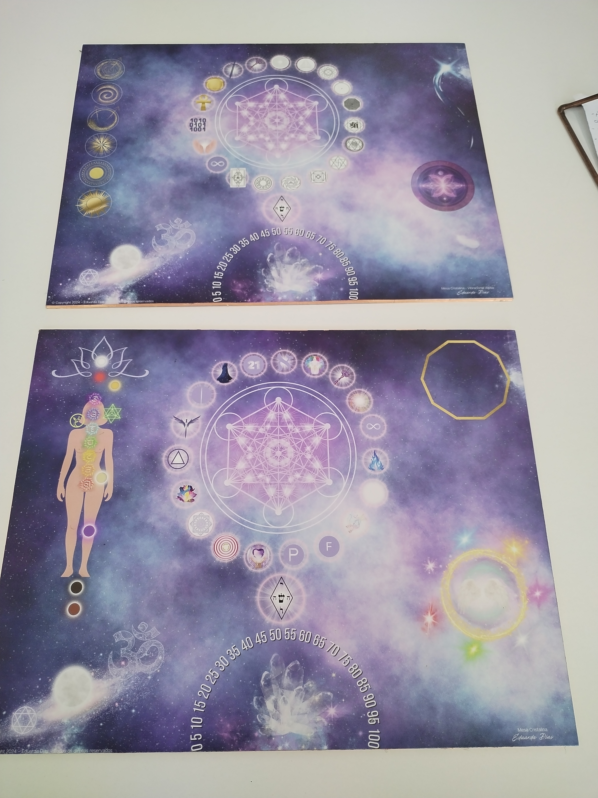
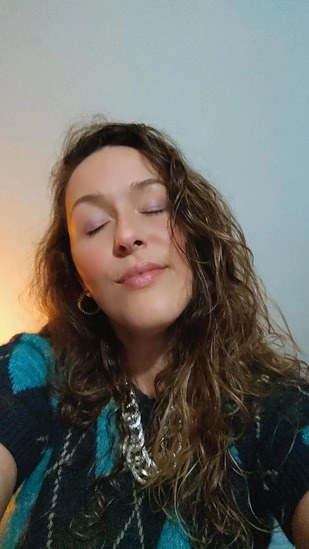

Uma Mesa Radiônica Psiônica actua nos campos físico, emocional, mental e espiritual. O que a torna única é quem a usa — as terapias integradas, a intenção e a energia do operador. Esta é a minha versão.

A Mesa Radiônica Psiônica trabalha nos campos físico, emocional, mental e espiritual. Na vertente psiônica, tudo é acedido através da mente e da energia do operador — sem pêndulo, sem intermediários. A intenção e a sensibilidade de quem trabalha são parte central do processo.
A Mesa Radiônica Cristalina é a minha versão — dois tabuleiros construídos por mim, com as terapias que integrei na minha formação. Não há outra igual porque não há outro operador igual.
Terapia Multidimensional
Cura através do coração — conduz energia pelos vários níveis do ser (físico, emocional, mental, espiritual), incluindo memórias traumáticas e vidas passadas.
Terapia Angélica
Trabalho com frequências angélicas integrado no processo de limpeza e harmonização do campo.
Radiação Atlante
Dois símbolos energéticos integrados na mesa para trabalho de limpeza e harmonização profunda do campo.
Khannasuka · Reiki de limpeza
Símbolo de Reiki específico para limpeza de entidades negativas e energias pesadas do campo energético.
Geometria de Fluorite Octaédrica
Código de luz que trabalha a clareza, pureza e reorganização do campo energético.
Chakras Transcendentais
A mesa inclui centros energéticos que vão além dos 7 chakras conhecidos — camadas mais subtis do campo humano.
Abundance Flush Empowerment
Sistema de 6 níveis para desbloqueio e activação da abundância e prosperidade — limpa padrões de escassez, transmuta o campo magnético e abre o fluxo em todas as áreas da vida.
Leitura intuitiva
Durante a sessão tenho sensações e intuições que fazem parte do processo — e partilho-as no áudio final.
Pode ser presencial ou à distância — incluindo offline, enquanto dormes ou no teu dia a dia. O campo energético não tem fronteiras físicas.
Análise breve do campo
Inicio com uma leitura do estado energético da pessoa — o que está activo, o que está bloqueado, onde há mais resistência neste momento.
Limpeza profunda do campo
Começo sempre com uma limpeza energética antes de qualquer outro trabalho. É necessário limpar antes de construir.
Trabalho com a mesa
Durante a sessão tenho frequentemente sensações e intuições — que fazem parte integrante do processo.
Áudio no final (sessões offline)
Nas sessões realizadas à distância em modo offline, envio um áudio com o que observei — o que senti, o que trabalhámos, o que ficou em movimento.
Duração aproximada: 1 hora, podendo variar conforme o estado energético da pessoa.
Reacções possíveis durante a estabilização
O campo energético precisa de tempo para se reorganizar. É natural sentir:
Após a estabilização: melhoria da energia e bem-estar, mais clareza, abertura a novas oportunidades.

A minha mesa é minha — construída com as terapias que escolhi, com os símbolos que integrei, com a forma de trabalhar que desenvolvi ao longo do tempo. Não é igual a nenhuma outra porque nenhuma outra sou eu.
Numa sessão de Mesa Radiônica, o operador é tão importante quanto a ferramenta. A intenção, a energia e a sensibilidade de quem trabalha determinam a profundidade do que é possível alcançar. É isso que cada pessoa que vem trabalhar comigo está a receber — não só a mesa, mas a forma como a uso.
Tenho frequentemente sensações e intuições durante as sessões que fazem parte do processo — e que partilho sempre no áudio final.
Se sentiste que isto ressoa — fala comigo. Sem compromisso. Só uma conversa para perceber se faz sentido.
Falar com a DudaSessão individual · 80€ · Presencial ou à distância